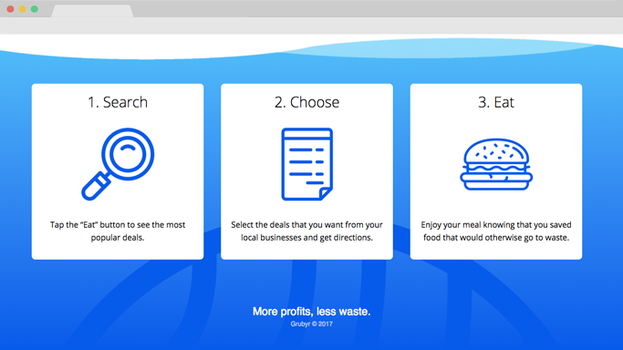
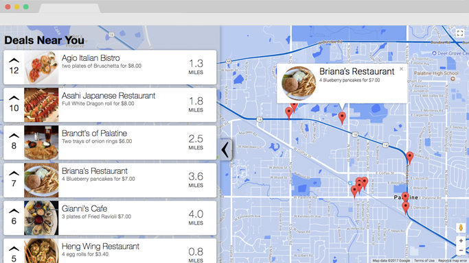
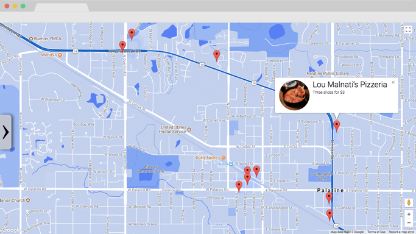
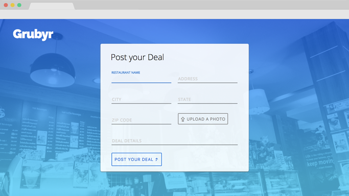
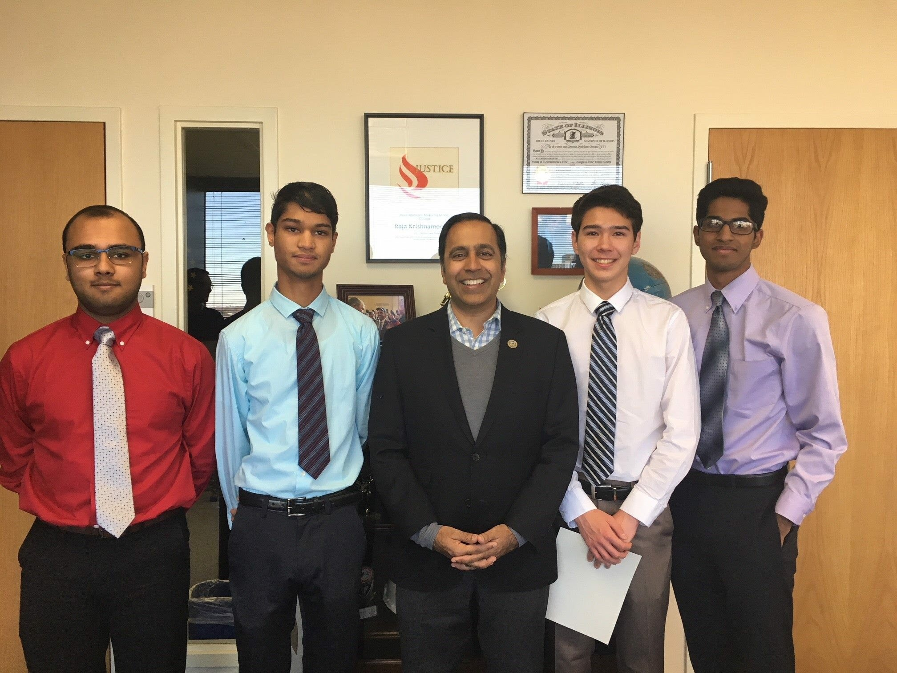

The Congressional App Challenge
The Congressional App Challenge is an annual contest held by members of Congress where teams or individuals build their own application and create a video demonstrating their app. The competition is grouped based on state district boundaries, our district being the Illinois 8th district with US Representative Raja Krishnamoorthi judging the submitted projects. My group consisted of four people, Bhargav Yadavalli, Avi Saxena, Rahul Gudivada and myself.
What is Grubyr?
With our app, we wanted to make it useful with the possibility of making a difference in the world. We went through some brainstorming, and decided to try and find a solution to reducing restaurant food waste. At the end of the day, many small pizza by the slice shops or bakeries are forced to throw out perfectly good food when they hit closing time. We wanted to try and help these restaurants reduce the amount wasted while also making a profit. The solution: connect the restaurants and late night hungry consumers through a site where you can find food deals at night.
Grubyr would be a place for restaurants to quickly post a deal online for customers to see. So if Panera had extra bread 20 minutes before closing time, they would be able to post a deal on Grubyr, and anyone who visited Grubyr would be able to see it. Then head over to Panera and buy that bread for a reduced price. It is good for both the consumer and the restaurant, generating some revenue for the restaurant and giving the customer quality food at a lower price, that would probably end up in the trash otherwise.
Planning The App
We started out by planning the structure of the app. Through our past experiences at Hackathons together, we found that communication was the main cause of failure. So we took steps to make sure that we kept things organized and everyone's role was assigned. We needed to make sure that things between the front end team (Bhargav and myself) was in sync with the back end team (Avi and Rahul) to prevent any merging errors.
After the planning phase was over, we compiled a list of all the languages/API’s we would need to use for our project. These included:
- HTML
- CSS
- JavaScript
- jQuery
- Socket.io
- Google Maps API
Grubyr was going to be a web application, so HTML, CSS, and JavaScript were givens. We were going to need socket.io as our server because we wanted things to update in real time so that users do not miss out on deals. We also wanted users to have a map view of all the deals, so we were going to need Google Maps API.
Building the Front End
I handled the front end, so I will mostly be focusing on that aspect of the application. The task was split between me and Bhargav, we decided he would handle the Google API while I handled the UI and page development.
Creating the Header
The header of the site needed to grab the user's attention and give them an idea of what they were looking at. Grubyr is not well known, so I needed to quickly and efficiently communicate what Grubyr was with the header of the page.
I decided to build some brand identity by putting our logo in the top left corner and shading the header in a light blue to dark blue vertical linear gradient.
The header consisted of 3 elements, the logo, the short phrase description of Grubyr, and the two action buttons.
The mindset behind this layout is that instantly the user's eyes are drawn to the large center text, and then the second thing they look at is the action buttons below. You want the flow of the page to make logical sense, and this way the user easily understands the purpose of our webpage.
Informing the User Further
Below the header, we had 2 sections talking about what our application aims to accomplish in a lot of detail. The first section had a paragraph with a stock image of the site. The purpose of this paragraph was to inform the user of the details of our app.
The second section shows the user how to use the site, by breaking the process into 3 simple steps with short descriptions, all displayed in a left to right fashion.

Designing the Find Deals Page
The find deals page was a hassle to design, because I needed to get it to show a list of all the local food deals in a list view, along with a map view.

The solution I chose was having a sliding menu on the left side for the list view, and then have the map cover the back.
This solution allowed for the user to easily access the list view and the map view at the same time, and gave them the option to only display the map view if they wanted more space to see it.

Designing the Create Deal Page
The create deal page was created to allow the business owners to easily input their deal. There were a lot of fields, and inputting information can be very mundane. So I wanted to give the page some life and added some subtle animations along with a vibrant color palette.
The text boxes have subtle animations when you start typing, the label moves from inside the text box to on top of the text box. It is a common animation used by large companies like Google.

I wanted the background to match the blue theme seen on the home page, so I applied the same gradient over the photo of the restaurant. I created a slightly transparent centered divider to encase all of the form fields so that there was enough contrast between the inputs and the background.
The Results
After about a month of waiting, we heard back from Raja and found out that we had won the Congressional App Challenge for our District.

Left to right: Avi Saxena, Bhargav Yadavalli, Raja Krishnamoorthi, Evan Eckels, Rahul Gudivada
We plan to continue this project, and build a mobile app and possibly bring it to market. If you are interested in this app and want updates as we work on it, you can enter your email on our website here.